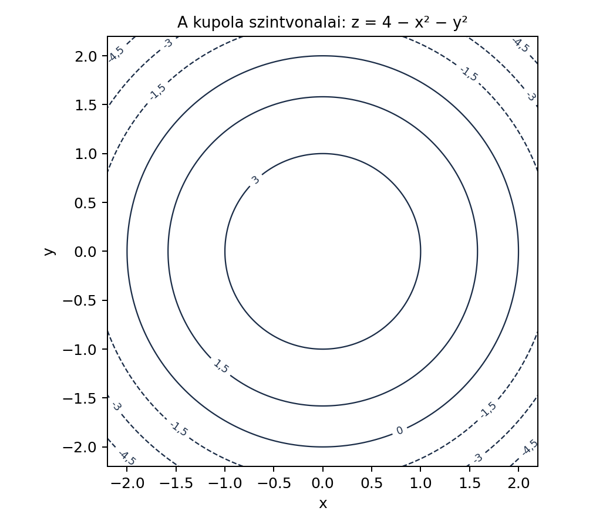

Egy csillagvizsgáló kupoláját vagy egy parabolaantennát gyakran úgy
kell befedni, festeni, illetve a rádiójeleket visszaverő lemezfelületét
úgy kell gyártani, hogy ismerjük a felület tényleges területét. A
síkbeli tartományok területét már tudjuk integrálni, de egy görbült
felület felszíne nem egyenlő a vetület területével: minél meredekebb a
felület, annál nagyobb a tényleges felszín ugyanazon alapterület fölött.
A feladat tehát az, hogy egy térbeli felületet paraméterezzünk,
meghatározzuk a felszínelemét, és abból integrálással kiszámítsuk a
teljes felszínt. Ezzel a módszerrel később a felületi integrálokat is
fel tudjuk építeni, például folyadékok áramlásának, elektromos mezők
fluxusának számításához.
29.1.2 Szemléletes kép
A felületet leggyakrabban két paraméterrel írjuk le, ahogy egy
földgömbön a szélességi és hosszúsági körök együttese adja a gömb
pontjait. A paraméterek síkjában egy téglalap hálózatát rajzoljuk: az
egyik irány mentén például a
szélességet változtatjuk, a másik mentén a
hosszúságot. A felületen ezek a vonalak görbült koordinátavonalakká
válnak: a
állandó görbék a szélességi körök, a
állandó görbék a hosszúsági körök (meridiánok). A felszínelem lényege
ugyanaz, mint a többes integráloknál a területelemé: egy kis
paramétertéglalap képe a felületen közelítőleg egy paralelogramma,
amelynek területét két érintővektor keresztszorzatának hossza adja.
Az alábbi ábra a kupola szintvonalait mutatja, amelyet a valós
alkalmazásban részletesen is kiszámolunk. A szintvonalakból már
sejthető, hogy a felület meredeksége a perem felé növekszik, ezért a
felszín nagyobb, mint az alapterület.

A kupola szintvonalai: z = 4 − x² − y² -
A szintvonalak koncentrikus körök; a kupola a z = 0 síkban az x² + y² =
4 sugarú körben zárul. A felszín kiszámításához az √(1 + f_x² + f_y²)
súlyozást integráljuk ezen a körön.
29.1.3 Paraméteres felület és
koordinátavonalak
Definíció. Legyen
összefüggő, nyílt vagy korlátos tartomány a
paramétersíkban. Azt mondjuk, hogy a
folytonosan differenciálható leképezés egy (reguláris)
paraméteres felületet (parametric surface) ad meg, ha a
parciális deriváltjaiból képzett
vektorok lineárisan függetlenek minden belső
pontban, azaz
A
görbét, ahol
rögzített, a
irányú koordinátavonalnak; a
görbét pedig az
irányú koordinátavonalnak nevezzük, ahol
rögzített.
A feltétel azért fontos, mert a két parciális derivált vektor a
felület érintővektorai, és ha nem lineárisan függetlenek, a felületnek
csúcsa, éle vagy más szingularitása lehet. A keresztszorzat nullától
különbözősége biztosítja, hogy a felület lokálisan sima, kétoldalú
felületdarab.
29.1.4 Normálvektor és
irányíthatóság
A
vektor merőleges mindkét érintővektorra, tehát a felület
normálvektora. A hosszával normálva kapjuk a(z egyik
irányú) egységnormálist:
Egy felületet irányíthatónak (orientable) nevezünk,
ha a felületen megadható egy folytonos egységnormális vektormező, tehát
a normálvektor iránya a felületen haladva nem „fordul át” ugrásszerűen.
Ha a paraméterezés reguláris és a
(zárt) tartományon kölcsönösen egyértelmű, akkor a
iránya folytonosan változik, tehát a paraméteres felületdarab
irányítható; az irányítás megfordítható a paraméterek felcserélésével,
mert
.
Ellenpélda. A Möbius-szalag
klasszikus példa nem irányítható felületre. Képzeljünk el egy hosszú
téglalapot, amelynek egyik végét 180 fokkal megcsavarva ragasztjuk a
másikhoz. Ha egy pontból elindulunk a normálvektorral és egyszer
körbeérünk a szalagon, a normálvektor az ellenkező irányba mutat vissza;
így nincs folytonos egységnormális vektormező az egész szalagon. A
Möbius-szalagnak is van reguláris paraméterezése, de az nem kölcsönösen
egyértelmű: a téglalap két szélét
(
és
)
fordítva ragasztjuk össze, és ott a normálvektor ellentétesre vált. A
Möbius-szalag tehát nem irányítható.
29.1.5 A felszínelem és a
felszínképlet levezetése
A felszín kiszámításához ugyanazt a gondolatot használjuk, mint a
síkbeli területnél: a paramétertartományt kis téglalapokra bontjuk, és
megnézzük, hogy a felületre képzett képük mennyivel nagyobb.
Tétel (paraméteres felület felszíne). Ha a
reguláris paraméteres felület, akkor a felületdarab
felszíne (surface area)
A
mennyiséget felszínelemnek nevezzük, és a felületi
integrálok alapjául szolgál.
Bizonyítási terv. Tekintsünk a paramétersíkban egy
kis téglalapot, amelynek oldalai
és
.
A felületen ennek képe közelítőleg egy paralelogramma, amelyet a
és
érintővektorok feszítenek ki. Egy ilyen paralelogramma területe éppen a
két vektor keresztszorzatának hossza:
.
Ezt összegezve az összes kis téglalapra, majd a felosztást finomítva a
Riemann-összegek határértéke éppen a fenti kettős integrál.
29.1.5.1 Részletes levezetés
Paralelogramma területe. Ha két vektor
és
,
akkor az általuk kifeszített paralelogramma területe
.
Ezt a vektoriális szorzat definíciójából tudjuk: a keresztszorzat hossza
,
ahol
a két vektor által bezárt szög, ez pedig éppen a paralelogramma alapszor
magassága.
Kis képek közelítése. Legyen
egy belső pont, és válasszunk kis
,
növekményeket. A felületi pont
és hasonlóan
A kép tehát jó közelítéssel az a paralelogramma, amelynek csúcsaiból
a fenti két vektor indul ki.
Az alábbi ábra ezt a 2. példa gömbjén
()
mutatja meg: a
,
paramétertéglalap képe egy görbült négyszög, amelyet jól közelít az
és
által kifeszített paralelogramma.
Statikus változat (mint a PDF-ben)
A paramétertéglalap képe a gömbön és az érintő
paralelogramma: a görbült cella területe
,
a paralelogrammáé
Riemann-összeg. A teljes felületdarab közelítő
területe:
Ez a
kétváltozós függvény Riemann-összege a
tartomány fölött.
Határérték. A felosztás finomságát nullához
közelítve a Riemann-összegek határértéke a kettős integrál definíciója
szerint éppen
feltéve, hogy az integrál létezik. Folytonos parciális deriváltak
esetén az integrandus folytonos, így a korlátos, mérhető
tartományon integrálható. ∎
29.1.6 A grafikonfelület speciális
esete
A leggyakoribb felülettípus, amikor a felület egy kétváltozós
függvény grafikonja:
.
Ekkor választhatjuk a paraméterezést
A parciális deriváltak:
ezért a keresztszorzat:
A hossza:
Ebből kapjuk a következő tételt.
Tétel (grafikonfelület felszíne). Ha
folytonosan differenciálható a
tartományon, akkor a grafikonfelület felszíne
29.1.7 Kidolgozott példák
29.1.7.1 1. példa: Hengerpalást
felszíne
Paraméterezzük az
sugarú,
magasságú hengerpalástot:
A parciális deriváltak:
A keresztszorzat:
A hossza:
mert
.
A felszín:
amely éppen a hengerpalást jól ismert területe.
29.1.7.2 2. példa: Gömb
felszíne
Használjuk a szabványos gömbi paraméterezést, ahol
a
tengelytől mért szög,
az azimut (a könyv konvenciója szerint):
ahol
és
.
A parciális deriváltak:
A keresztszorzat kiszámítása:
A determináns kifejtése: az
komponens
;
az
komponens
;
a
komponens
.
A hossz:
mivel
a
intervallumon. A felszín tehát:
Ez a várt eredmény.
29.1.7.3 3. példa: Kúppalást
felszíne
Vegyük azt a kúpot, amelynek alapsugara
,
magassága
,
és a csúcsa az origóban van, az alaplap pedig a
magasságban. Paraméterezés polárkoordinátával:
Ekkor
A keresztszorzat:
A hossza:
A palást felszíne:
Például
és
esetén
.
29.1.8 Számolási recept: felszín
kiszámítása
Fogalmazzuk meg a felületet mint paraméteres
felületet: válasszuk meg a két paramétert és a
leképezést, ügyelve a paramétertartományra.
Számítsuk ki a parciális deriváltakat
és
vektor formában.
Határozzuk meg a keresztszorzatot
(például determináns-módszerrel), majd annak hosszát:
.
Ellenőrizzük, hogy a kapott integrandus nemnegatív,
és a paramétertartományon a parciális deriváltak folytonosak; reguláris
felületnél a keresztszorzat nem nulla.
Integráljunk a
paramétertartomány fölött, alkalmas koordinátatranszformációt (például
polárkoordinátát) használva, ha a tartomány hengerszimmetrikus vagy
radiális.
Értelmezzük az eredményt: hasonlítsuk össze ismert
geometriai képletekkel vagy közelítő becslésekkel, és ellenőrizzük a
mértékegységet.
29.1.9 Valós életbeli alkalmazás:
kupola festése és parabolaantenna
29.1.9.1 Kupola festendő
felülete
Tegyük fel, hogy egy kis csillagvizsgáló kupolája forgási paraboloid
alakú, amelyet a
függvény ír le, ahol a koordinátákat méterben mérjük. A kupola alja a
magasságban van, tehát a vetülete az
sugarú körlap. Ezt a felületet szeretnénk kívülről lefesteni; a festék
szükségletéhez kell a felszín.
A grafikonfelület képletét használjuk:
ezért
A felszín:
Polárkoordinátára térve,
,
,
a határok
,
:
A belső integrál a
,
helyettesítéssel, a határok
és
:
Mivel
,
a belső integrál
.
A teljes felszín:
A kupola felszíne tehát körülbelül 36,2 m². Ha egy
liter festék 8 m²-re elegendő, akkor legalább
,
azaz 5 liter festéket kell vásárolni. A modell korlátai: a kupola
valójában nem pontosan forgási paraboloid, az aljánál párkány vagy perem
lehet, és a festékréteg vastagsága, a felületi érdesség is befolyásolja
a fogyást.
29.1.9.2 Parabolaantenna
felülete
Egy parabolaantenna lemezfelülete szintén forgási paraboloid. Legyen
az átmérő 2 m, a mélység 0,3 m. A peremen a sugár 1 m, a magasság 0,3 m,
ezért a felület egyenlete
,
ahol
.
A parciális deriváltak:
,
,
így
A felszín polárkoordinátákkal:
A belső integrál
,
helyettesítéssel, határok
és
:
Numerikusan
,
a különbség
,
így a belső integrál
.
A teljes felszín:
A tányér felszíne tehát körülbelül 3,4 m², ami
összhangban van azzal, hogy egy 1 m sugarú körlap területe
m², de a homorú felület kissé nagyobb annál.
29.1.10 Tipikus hibák
A keresztszorzat hosszának elhagyása a
felszínelemből. Sokan a felszínt úgy próbálják számolni, hogy
csak a paramétertartomány területét integrálják, vagy elfelejtik a
tényezőt. Helyes gondolat: mindig a keresztszorzat hosszával súlyozzuk a
paramétertartományt, mert ez adja a kis paramétertéglalap képének
torzítását.
A grafikonfelület képletében a parciális deriváltak
előjelének hibás kezelése. A
képletben a deriváltak négyzetre emelése miatt az előjel nem számít, de
ha valaki a vektorokat felcseréli, a keresztszorzat előjelet vált, a
hossza változatlan, így a felszín nem változik. Viszont ha a gyök alatt
kimarad egy tag, az hibához vezet.
A gömb paraméterezésénél a szögek tartományának
felcserélése. A
és
tartományok elengedhetetlenek; ha valaki
-t
is
-re
veszi, csak a félgömböt integrálja. Mindig gondoljuk át, hogy a
paramétertartomány ténylegesen lefedi-e a teljes felületet.
Nem irányítható felületről nem lehet felszínt
számolni? De, a felszín független az irányíthatóságtól, mert a
hossz nem függ a normálvektor irányától. Azonban a felületi integrálhoz
(például fluxushoz) szükség van irányíthatóságra, mert ott a
normálvektor iránya számít.
A paraméterezés nem reguláris a tartomány peremén vagy
egyes pontokban. Például a gömbnél a pólusokon
(
vagy
)
a keresztszorzat nullává válik, de ezek a tartomány pereméhez tartoznak,
és a felszín integráljára nincs hatással, mert a mértékük nulla. A
reguláris feltétel csak a belső pontokra vonatkozik.
29.1.11 Önellenőrzés
1. Igaz-e, hogy minden paraméteres felület
irányítható? Válaszoljon indoklással.
2. Mi a felszínelem képlete paraméteres
felületnél?
3. Írja fel az
grafikonfelület felszínének integrandusát.
4. Mennyi a gömb felszíne az itt bemutatott
paraméterezéssel számolva?
5. Milyen geometriai jelentése van a
vektornak?
6. Egy hengerpalást
,
méretekkel; számítsa ki a felszínét.
A válaszok a Feladatok megoldásai előtt találhatók.
29.1.12 Feladatok
1. feladat (A). Adott a gömb paraméterezése
sugárral:
Számítsa ki a
,
ponthoz tartozó
,
vektorokat, a
keresztszorzatot és annak hosszát. Ellenőrizze, hogy a hossz
értékű-e.
2. feladat (A). Határozza meg paraméteres
felületként és a felszínképlettel az
sugarú,
magasságú hengerpalást felszínét.
3. feladat (B). Számítsa ki a
paraboloid azon darabjának felszínét, amelyet a
sík metsz le.
4. feladat (B). Egy egyenes körkúp palástjának
felszínét paraméterezéssel vezesse le, ha az alapsugár
,
a magasság
.
5. feladat (C). Bizonyítsa be a következő
azonosságot:
Alkalmazza ezt az azonosságot a gömbnél kapott
és
vektorokra, és mutassa meg, hogy az eredmény ugyanaz, mint a
keresztszorzat hosszának közvetlen számolása.
6. feladat (D). Egy parabolaantenna belső
lemezfelülete forgási paraboloid, átmérője
m, a mélysége
m. A gyártáshoz ismerni kell a lemez területét. Számítsa ki a felületet,
feltéve, hogy a felület egyenlete
,
ahol a peremen
és
.
Adja meg az eredményt m²-ben két tizedes pontossággal.
29.1.13 Megoldások
29.1.13.1 Önellenőrzés –
válaszok
1. Nem, nem minden felület irányítható; a
Möbius-szalag ellenpélda, mert a paraméterezése nem kölcsönösen
egyértelmű.
2.
.
3.
a grafikonfelületnél.
4. A gömb felszíne
.
5. A
a felület normálvektora, hossza a felületelem torzítását adja.
6.
.
29.1.13.2 1. feladat megoldása
A parciális deriváltak:
A
,
pontban
,
,
így
A keresztszorzat:
A hossza
.
Az általános képlet
,
egyezik.
29.1.13.3 2. feladat megoldása
A paraméterezés
,
,
.
Keresztszorzat:
,
hossza
.
Felszín:
29.1.13.4 3. feladat megoldása
A felület grafikon:
,
(mert
).
,
,
az integrandus
.
Polárkoordinátákkal:
A belső integrál
,
:
A teljes felszín:
29.1.13.5 4. feladat megoldása
Lásd a 3. példa levezetését: a palást felszíne
.
29.1.13.6 5. feladat megoldása
A
vektorazonosság a keresztszorzat és a skaláris szorzat definíciójából
következik, mert
és
,
ahol
a két vektor szöge; ekkor
.
A gömbnél
és
fent szereplő vektoraira:
ezért
ahogy a keresztszorzat hosszánál is kaptuk.
29.1.13.7 6. feladat megoldása
m, tehát
m. A peremen
m, így
.
A felület egyenlete
.
Az integrandus:
,
,
tehát
.
Polárkoordinátákkal a
körlap:
Belső integrál
,
,
határok
és
:
Teljes felszín:
Tehát a lemez területe körülbelül 4,91 m².
29.1.14 Rövid összefoglaló
A paraméteres felületet egy
leképezéssel adtuk meg, amelynek parciális deriváltjai,
és
,
a felület érintővektorai. A normálvektor a
keresztszorzat, a felszínelem pedig ennek hosszával
súlyozott paramétertartomány-elem:
A felületdarab felszíne a paramétertartományra vett kettős
integrál:
Ha a felület egy függvény grafikonja,
,
akkor a felszíne
Példaként levezettük a hengerpalást, a gömb és a kúppalást felszínét,
valamint valós alkalmazásként kupola és parabolaantenna felületét
számoltuk ki. Az irányíthatóság fogalmát a Möbius-szalag ellenpéldájával
világítottuk meg.
A felszínképlet és a paraméteres felületek tárgyalása a többváltozós
kalkulus klasszikus, stabil eredménye, amely megtalálható a standard
tankönyvekben (például Stewart, Thomas, Marsden–Tromba, Laczkovich–T.
Sós). A Numerikus értékek (például a festékfogyasztás) reális,
kerekített modellek, nem mért adatok. A fejezet forráskiindulópontjai az
OpenStax Calculus Volume 3, az MIT OCW 18.02SC Multivariable Calculus és
a Paul’s Online Notes Multivariable Calculus, de konkrét oldalszámot,
tételszámot vagy pontos idézetet nem adok meg, mert azok kiadásonként
eltérnek. A történeti adatok (például a Möbius-szalag felfedezője) nem
képezik a tananyag súlypontját; aki mélyebben kíváncsi, az
irodalomjegyzékben találhat pontos hivatkozásokat.